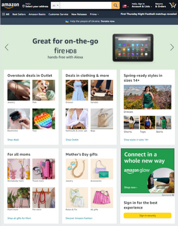
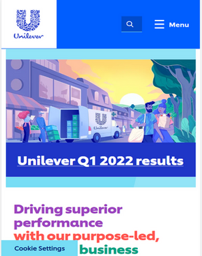
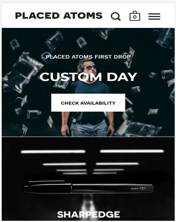

Hick's Law
Amazon
Amazon.com Hick's law states the more stimuli (options) offered to a user, the longer it takes to make decisons. This can be interpreted to mean not to clutter up a page with too many options for a user otherwise they will find the layout confusing and uncomfortable. One example of a website that doesn't overload it's users wtih options is Amazon, because in both it's mobile and browser views it has a limited number of options and puts further selections under menus only viewable once the user clicks on them.
Proximity
Unilever
Unilever.com Proximity is the distance beteen objects on a page, and can convey different meanings depending on said distance. For example the website for Unilever has placed a greater emphasis on the different titles by seperating them into different groups. The Q1 results are not in the same area as the corporate slogan below it, seperating them from one another. Another design choice involving proximity is the Unilever logo, because it uses many small icons in close proximity forming the letter U to convey a quality feel.
Contrast
Placed Atoms
placedatoms.com Contrast is the difference between two objects, and in design it usually refers to size or color. For instance a stark page with nothing on it could put emphasis on whatever is placed at the center of it drawing all attention to the object. One website that I found tht uses contrast well is placedatoms by a youtuber who likes to build things. The contrast is sharp with the color scheme following white vs black. With just these two simple colors, the creator is able to dras the user's eyes to important objects, like buttons or dates.